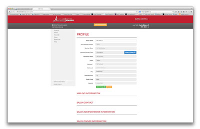
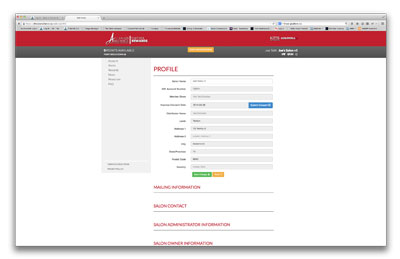

During my time at G3M, I was lead front-end designer/developer for Salon Alliance Canada. This was a large scale e-commerce site for reward redemption for the KAO CA partnership program. A fully functional web UI, with several features including reward redemption, point management, shopping cart, user/admin role functions, and many others.
Site was developed off the extremely popular framework Bootstrap (or Twitter Bootstrap as many still refer it as). A very powerful framework built by the amazing people at Twitter. Site also included hand written CSS, and Jquery for extra functionality along with Highchart JS library.
Using my web skills I helped create a great user-friendly UI with a strong attention to detail on the UX end of the site, with a large transition from one site to another user expereince was key with making a smooth transition without a large back lash from the user themselves. Being on the receiving end of bad UI & UX I have a strong understanding of how this can truly affect your site and reviews and return visits.


JASON JACOBSON DESIGNS © 2014